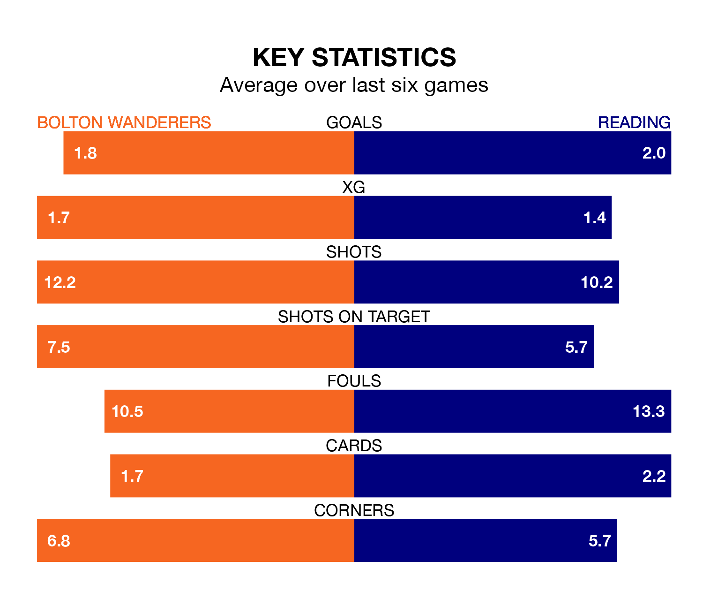

Bolton Wanderers are heavy favourites to keep all three points at home in Monday's kick-off against Reading.
Bolton, who sit third in EFL League One with 40 games played, are priced at 1.5 to seal victory at the University of Bolton Stadium.
Sitting 10 places and 24 points behind them in the table, Reading are 6.0 to win with *Betting Company*, while the draw is at 4.0.
With 71 goals in 40 games so far this season, Bolton are the league's second-highest scorers with 1.8 goals per game. And they are conceding fewer than average, letting in 43 goals at a rate of 1.1 per game.
Reading are also above average scorers, with 1.4 goals per game, compared to a league average of 1.3. They have also conceded 1.4 goals per game.
In the last 10 years, Bolton and Reading have played each other on nine occasions. Bolton won one of them, Reading three, and they drew five times.
On average, Bolton scored 0.9 goals and the Royals 1.1 in those matches.
Their last meeting was on September 16, when Reading won 2-1 at home.
Wanderers' Josh Sheehan is among the league's most creative players, racking up 12 assists in 38 appearances so far this season, and holding second spot in EFL League One's assist charts.
For the Royals, Femi Azeez and Lewis Wing have set up the most goals, having laid on seven assists apiece to date.
The home team are in mixed form in EFL League One, with two wins and three draws from their last six games.
With three wins and three losses over that period, the visitors' form is similar – they have both taken nine points from 18.
Bolton's last match was on Friday, a 0-0 draw against Stevenage.
Reading beat Northampton Town 1-0 last time out, also on Friday, with Kelvin Ehibhaimha on the scoresheet.
Monday's match will be refereed by Ben Toner, who has taken charge of 12 EFL League One games so far this season, issuing no red cards and booking 66 players. He has awarded two penalties.
The last Bolton game Toner refereed was a 1-0 home win against Blackpool on November 11. He is yet to oversee a match featuring Reading this season.
Updated: 10:31 (UTC), 31/03/24